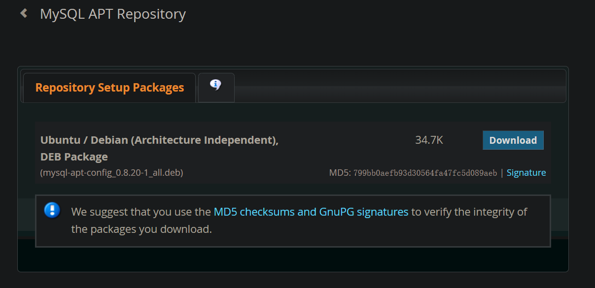
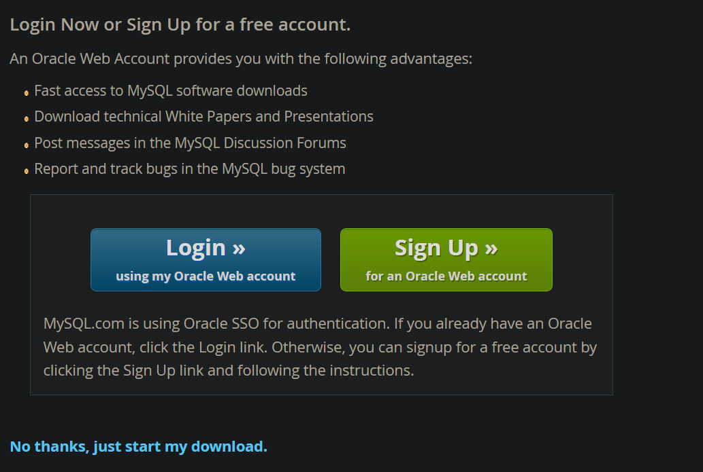
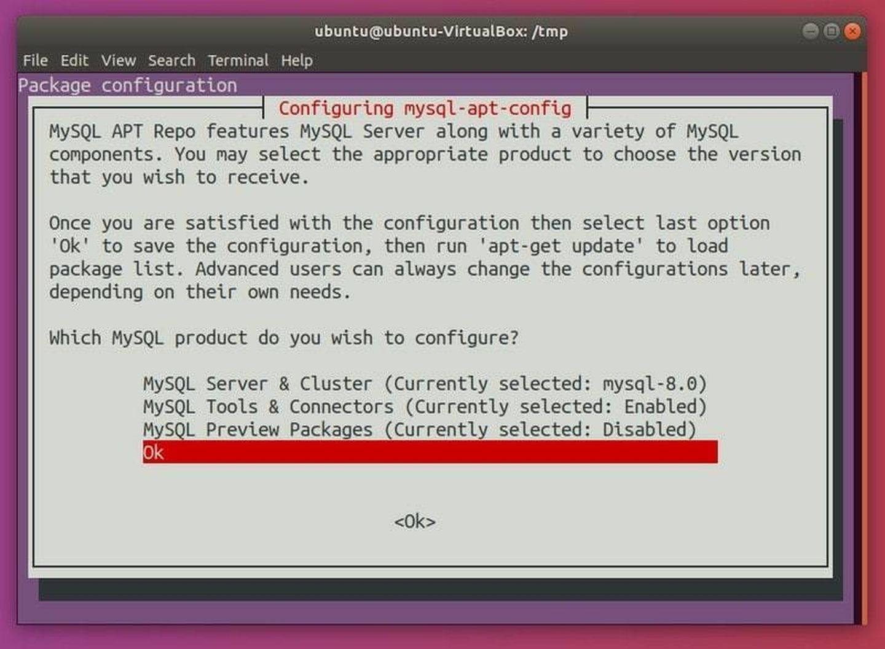
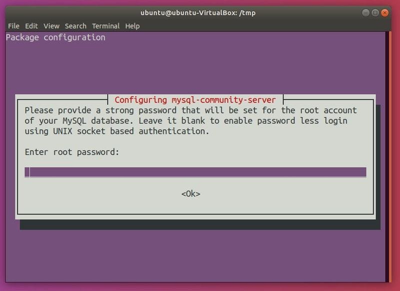
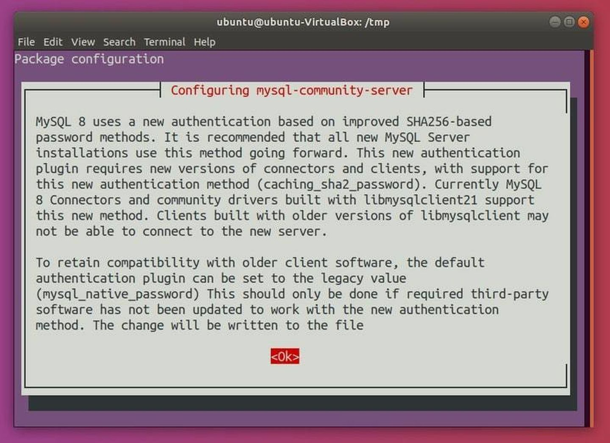
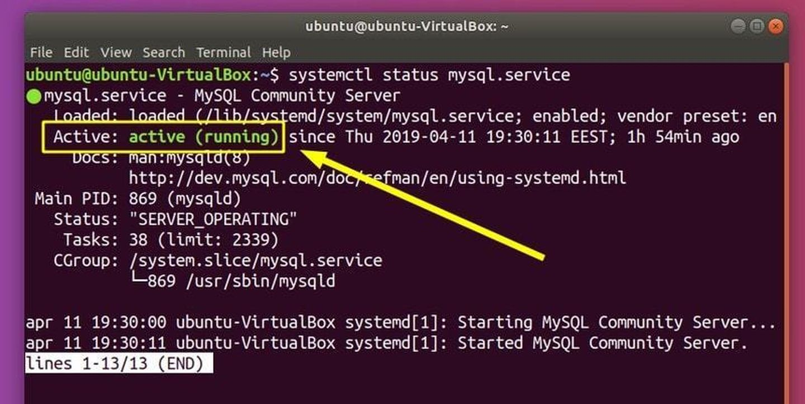
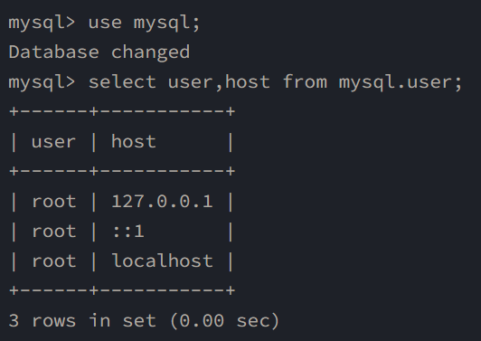
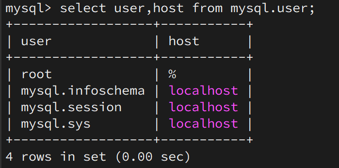

本文主要介绍了如何在Ubuntu2004上安装最新版本的MySQL以及如何设置MySQL外网访问。
关键词：MySQL，Linux
更新仓库
1 | sudo apt update |
用官方仓库安装 MySQL
下载mysql仓库工具包

点击Download，选择No thanks, just start my download.

安装
1 | sudo dpkg -i mysql-apt-config* |
更新仓库
1 | sudo apt update |
安装mysql-server
1 | sudo apt install mysql-server -y |
这样做会在你的终端中打开包配置的提示。使用向下箭头选择“Ok”选项。

点击回车。这应该会提示你输入密码：这是在为 MySQL 设置 root 密码。

输入密码然后点击 Tab 键去选择“Ok“。点击回车键，你将重新输入密码。

将会展示一些关于 MySQL Server 的配置信息。再次按下 Tab 去选择 “Ok” 和按下回车键：

第一种是最新的密码加密方法，第二种是sql5版本之前的密码加密方法，这里选择第二个。
验证安装
要验证 MySQL 已经正确安装，使用下列命令：
1 | sudo systemctl status mysql.service |

检查到显示running即安装成功
设置自动启动
1 | sudo systemctl enable mysql.service |
设置外网访问
链接mysql以后，在mysql命令行输入以下命令就可以允许外网访问：
1 | update mysql.user set host=`%` where user='root'; |
原理
mysql默认是不允许外网访问的，只允许localhost或者127.0.0.1访问。
查询默认的mysql.user表，如下表示不允许外网访问，只允许本机访问：

更新访问权限
1 | update mysql.user set host=`%` where user='root'; |

更新权限
1 | flush privileges; |